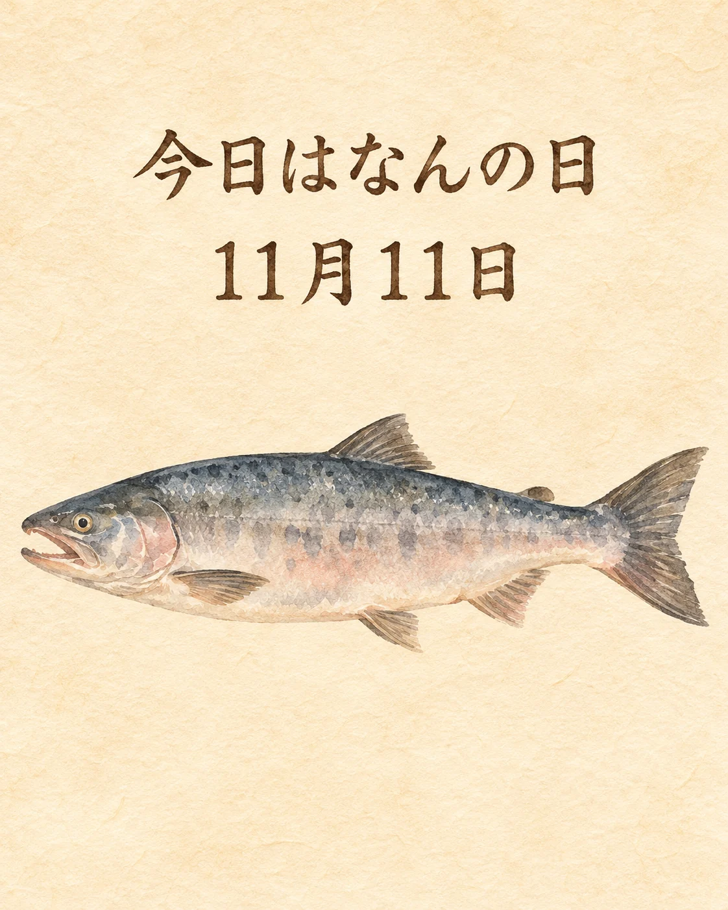

11月11日は「鮭（さけ）の日」です🐟
「鮭」の漢字のつくり「圭」を分けると、「十一・十一」と読めることにちなみます。
1992年、大阪の中央卸売市場の卸会社や仲卸業者を母体とする「鮭の日制定委員会」が制定。その後、京都を含む京阪神の市場関係者にも活動が広がりました。
焼く、煮る、漬ける。さまざまな調理で親しまれてきた鮭は、和食の身近な食材のひとつ。食材を生かす工夫とともに、魚を味わう楽しみをあらためて感じたいですね。
季節の味わいとともに、心ほどけるひとときをお過ごしください✨
鮭を味わう文化と、京阪神の市場
大阪市水産物卸協同組合が掲載する「鮭の日」案内では、1992年に制定委員会が発足し、毎年11月11日を鮭の日としたこと、翌年から京阪神地区の市場関係団体に活動が広がったことが説明されています。構成団体には京都水産協会も記載されています。掲載文中の「今年」や周年数は過年度の記述のため2026年の活動案内として引用していません。
村上市にも別の制定の歴史があり、大日本水産会が掲載する村上市観光課の説明から、日付の漢字の由来を確認しました。水産庁の水産関係記念日資料でも11月11日の鮭の日を確認できます。毎年の固定日につき、2026年は11月11日（水）です。当店では、和食の魚料理と関西の食を支える市場へのつながりを紹介します。当日の鮭の入荷・料理・価格・在庫・特別企画を案内する記事ではありません。
出典：大阪市水産物卸協同組合掲載「鮭の日HOME」（制定委員会・京阪神の活動）、大日本水産会・魚食普及推進センター「11月11日は『鮭の日』」（村上市観光課の説明・漢字の由来）、水産庁「さかなの日（仮称）」資料7・既存の水産関係記念日（2026年11月11日確認）。